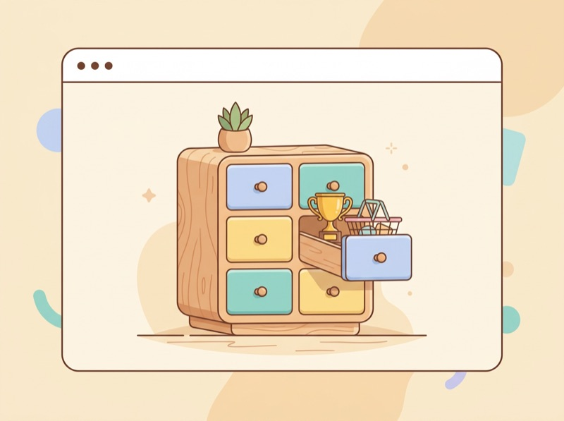
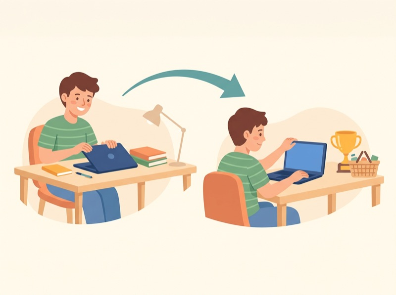

📱 スマホで開く
教室の画面を見ながら、自分のスマートフォンで、このページを開けます。スマートフォンのカメラで、このQRコードを読み取ってください。QRコードを押すと、大きく表示されます。
localStorageで保存し、再読み込みしても残るようにする。ゲーム班はハイスコア、EC班はカートの中身。データが変わったときに保存し、開いたときに読み込むlocalStorage / setItem / getItem / removeItem / JSON.stringify / JSON.parse / キー（保存の名前） / 保存と読み込みのタイミングgame.html（EC班はshop.html）と、plan.mdの第10回の欄（「何を保存したいか」）。動かない人は、1限前半の「追いつき」の時間で直す。第4回のlocalStorage（list.html）の復習になるこの回のゴール
localStorageに保存する所と読み込む所を、自分の作品の中で見つけて、書ける- 数は
Number(...)、配列はJSON.stringify／JSON.parseと、データの種類で書き方が変わることを説明できる - ゲーム班はハイスコア、EC班はカートの中身が、再読み込みしても残る
- 保存を消す（
removeItem）方法を知り、pushして公開URLでも確かめられる
授業の流れ
2コマ連続（90分 + 90分 = 計180分）。途中休憩あり。
今日の地図
第9回に追いつき、保存の考え方を知る
環境を整えて、第9回に追いつく（15分）
python3 -m http.server 8000を起動し、第1回（前期）と同じ手順で「ポート」タブ→「エディターでプレビュー」→ Simple Browserを開く。開くファイルは、アドレスバーの末尾だけを/game.html（EC班は/shop.html）に書き換える- 第9回のコードが動いている人: マスを押すとスコアが増える（EC班は、ボタンでカートが増えて合計が変わる）ことを確かめ、
plan.mdの第10回の欄に「何を保存したいか」を1行書く（例:「ハイスコアを保存」「カートを残す」） - 動かない人・途中の人: 第9回のページのコードと「うまく動かないときの確認」を見て、動くところまで進める。
Consoleの赤い文字の行番号から見る（第7回の道具1）。分からないときは、隣の人か講師に声をかける。今日の最初の15分は、そのための時間 - 動いたら、一度
commitしておく（このあと保存を足して、戻したくなったときのため）
保存の考え方：いつ保存して、いつ読み込むか（25分）
ブラウザの中の、小さな保管庫

localStorageは、ブラウザの中にある、小さな保管庫です。ハイスコアやカートを、引き出しにしまっておけます（絵のイメージ）。- 第4回で、
localStorageに配列を保存して、再読み込みしても残るlist.htmlを作った。今日は、同じ仕組みを、第9回の作品に入れる - 考えることは2つだけ。① いつ保存するか → データが変わったとき。② いつ読み込むか → ファイルを開いた直後に1回だけ
保存と読み込みのタイミング
- 保存のコードは3つ（第4回と同じ）。
localStorage.setItem("名前", 値)で書く、localStorage.getItem("名前")で読む、localStorage.removeItem("名前")で消す。この「名前」をキーと呼ぶ localStorageが覚えられるのは文字列だけ。だから、数は読み込んだあとでNumber(...)で数に戻し、配列はJSON.stringifyで文字列にして保存し、JSON.parseで配列に戻す（第4回の復習）- まだ何も保存されていないとき、
getItemはnullを返す。そのときは、初期値（数なら0、配列なら[]）を使う
localStorageの3つの操作
…github.io）の中の別の作品は、同じ保管庫を使います。だから、キーの名前を作品ごとに変えます。ゲーム班とEC班で、書き方を比べる
作品に、保存と読み込みを足す
保存のコードを足す（30分）
コードを足す場所（3か所ずつ）
showCart();の呼び出しだけです。EC班は、第9回で「取り消す」ボタンを作った人だけ、showCartの中のcart.splice(i, 1);の下にもsaveCart();を足します。- 第9回のコードに、数か所だけ足す（全部を書き直さない）。自分のジャンルのぶんだけ行う。1か所足すたびに、保存・再読み込みで、
Consoleに赤い文字が出ていないか確かめる -
ゲーム班：ハイスコアを保存する（3か所）
① 読み込む——コードの上のほうの、
let score = 0;のすぐ上に足す。"game-hiscore"が、保存の名前（キー）。まだ保存されていないとき（null）は、Number(null)が0になるので、そのまま0から始まる。念のため|| 0も付けるconst hiKey = "game-hiscore"; let hiscore = Number(localStorage.getItem(hiKey)) || 0;
② 保存する——
hit関数の中の、score = score + 1;（第9回でscore = score + characters[j].point;に変えた人は、その行）のすぐ下に足す。スコアがハイスコアを超えたときだけ、ハイスコアを更新して、保存するif (score > hiscore) { hiscore = score; localStorage.setItem(hiKey, hiscore); }③ 画面に出す——
renderの最後の行、scoreText.textContent = ...;を、次に置き換えるscoreText.textContent = `スコア: ${score} ハイスコア: ${hiscore}`; -
EC班：カートを保存する（3か所）
① 読み込む——
const cart = [];の1行を消して、次に置き換える。loadCartは、保存されたカートを読んで返す関数。まだ何もない（null）ときは、空の配列[]を返す。saveCartは、今のcartを文字列にして保存する関数const cartKey = "shop-cart"; function loadCart() { const saved = localStorage.getItem(cartKey); if (saved === null) { return []; } return JSON.parse(saved); } function saveCart() { localStorage.setItem(cartKey, JSON.stringify(cart)); } const cart = loadCart();② 保存する——「カートに入れる」ボタンの処理の、
cart.push(products[i]);のすぐ下に、1行足すsaveCart();
③ 画面に出す——一番下の
showCart();が、ファイルを開いた直後に、読み込んだカートを画面に出す（第9回のまま。変えない）。第9回で足した「取り消す」ボタンがある人は、cart.splice(i, 1);のすぐ下にもsaveCart();を足す（足さないと、取り消しが保存されない） - 保存して、再読み込みする。ゲーム班は、いくつか当ててスコアを増やしてから再読み込みして、スコアは0に戻るが、ハイスコアは残っていることを見る。EC班は、商品を2〜3個カートに入れてから再読み込みして、カートの一覧と合計が、そのまま残っていることを見る
閉じて開き直しても、残っている

保存された中身を見る（10分）
F12で開発者ツールを開き、Application（アプリケーション）タブ→左の「Local storage（ローカル ストレージ）」→プレビューのアドレス（…app.github.devの形のもの。いくつか並ぶことがある）、と開くと、キー（名前）と値の一覧が見える。game-hiscoreやshop-cartが見つかれば成功。EC班の値は、[{"name":"マグ","price":800}, ...]のような文字列になっている（JSON.stringifyの結果）- Codespacesのプレビューでは、開発者ツールの出方や、
Consoleが見ている画面が、思ったものと違うことがある（Consoleの上の「top」などの選択が、プレビューのページ（game.htmlなど）になっているか見る。分からないときは、講師に声をかける）。ApplicationタブやConsoleが使えないときは、画面で確かめるだけでよい（再読み込みしても、ハイスコア・カートが残るか）。消す操作は、2限前半で作るボタンで確かめられる Applicationタブが見つからない人は、Consoleタブに、localStorage.getItem("game-hiscore")（EC班はlocalStorage.getItem("shop-cart")）と書いてEnter。保存された値が出る- ここで考える: 保存されているのは、画面ではなく、データ。画面は、読み込んだデータから、毎回作り直している（第9回の形）
試して、壊してみる（10分）
- 消し方を知る:
ConsoleにlocalStorage.removeItem("game-hiscore")（EC班は"shop-cart"）と書いてEnter、再読み込みする。保存が消えて、最初の状態に戻る。localStorage.clear()は使わない（そのサイトの保存が全部消える。第4回のlist.htmlのfavoritesなども、同じ保管庫にあると、一緒に消えることがある） - 壊れた保存を見る（EC班）:
ConsoleにlocalStorage.setItem("shop-cart", "これはJSONではない")と書いてEnter、再読み込みする。ConsoleにSyntaxErrorが出て、画面が出なくなる。これは、JSON.parseが、文字列を配列に戻せなかったため。localStorage.removeItem("shop-cart")で消せば、直る - 考えてみる: カートに商品を入れてから、
productsのpriceを書き換えて再読み込みすると、カートの中の価格は、古いままになる。なぜか（保存したのは、入れたときのコピー）。本物のお店は、どうしていると思うか、隣の人と1分だけ話す -
うまく動かないときの確認
F12でConsoleタブを開き、赤い文字の行番号から見る（第7回の道具1）- 再読み込みしても、ハイスコア（カート）が0（空）に戻るときは、
setItemの行が動いているか見る。if (score > hiscore)の中に書けているか、saveCart();がcart.push(...)の下にあるか。console.log("保存した");を、その行の前後に書いて、Consoleに出るか見る（第7回の道具2） setItemとgetItemのキー（名前）が1文字でも違うと、別のものとして扱われる。hiKeyやcartKeyのつづりを見る- ゲーム班で、ハイスコアが保存の前から
0のままのときは、let hiscore = Number(localStorage.getItem(hiKey)) || 0;のhiKeyと、setItem(hiKey, hiscore)のhiKeyが、同じ名前か見る - EC班で
Cannot read properties of nullやSyntaxErrorが出るときは、loadCartのif (saved === null)があるか、保存された値が壊れていないか（removeItemで消して試す）を見る cartKeyがまだ無いと言われるときは、const cartKey = ...を、loadCartを呼ぶ行より上に置く
保存を自分の作品に広げる（任意の見せ合いコーナーつき）
自分の企画に合わせて、保存を1つ足す（30分）
plan.mdの「3. 必要な機能」を見て、保存したいものを1つ決める。先にやった保存（ハイスコア・カート）に、消す操作を足すのが、最初の1つとしておすすめ。保存を試すとき、消せないと、やり直しにくい- 1回に1つだけ足して、足すたびに保存・再読み込みで確かめる。うまくいかなくなったら、動いていた状態の
commitに戻れる -
ゲーム班の例：ハイスコアを消すボタン。①HTMLの
<button class="start">の行のすぐ下に、ボタンを1つ足す<button id="reset">ハイスコアを消す</button>
②コードの一番下の
render();のすぐ上に、クリックの処理を足すdocument.getElementById("reset").addEventListener("click", function () { localStorage.removeItem(hiKey); hiscore = 0; score = 0; render(); });removeItemで保存を消し、hiscoreとscoreを0に戻して、render()で画面を作り直す。今のスコアも0に戻す（戻さないと、次に当てたとき、消す前の点が、新しいハイスコアとして保存されてしまう） -
EC班の例：カートを空にするボタン。①HTMLの、カートの欄（
<div class="cart">...</div>）のすぐ下に、ボタンを1つ足す<button id="clear-cart">カートを空にする</button>
②コードの一番下の
showCart();のすぐ上に、クリックの処理を足すdocument.getElementById("clear-cart").addEventListener("click", function () { cart.length = 0; localStorage.removeItem(cartKey); showCart(); });cart.length = 0は、配列を空にする書き方（長さを0にする）。removeItemで保存も消して、showCart()で画面を作り直す - 消す操作ができたら、
plan.mdから、もう1つ保存したいものを選んでもよい（例: ゲーム班は「最後に遊んだときのスコア」、EC班は「お気に入りに入れた商品」）。キー（名前）は、作品ごとに、ほかと重ならない名前にする。同じアカウントの公開サイト（…github.io）の中の別の作品は、同じ保管庫を使うため - 書き方が分からないときは、今日足したコードをまねる。「読む → 使う → 変わったら書く」の形は、どの保存でも同じ
AIに相談するときのルール
- CodespacesのCopilot Chat（使える人）か、ブラウザの別タブで開いたGemini（gemini.google.com）に、今のコードを貼って、1回に頼むのは1つの変更だけにする。返ってきたコードは、読んでから貼る。貼る前に、APIキーや個人情報が入っていないかを見る
-
次のHTMLとJavaScriptは、localStorageでデータを保存する作品です。 （ゲーム班:ハイスコアを保存／EC班:カートを保存）。 やりたい変更は、次の1つだけです。 （例:最後に遊んだときのスコアも保存して、画面に出す／カートの商品数が10個を超えたら入れられないようにする） 変更したい部分だけを教えてください。保存の名前（キー）は、既存のものと重ならないようにしてください。理由も1行で説明してください。 （ここに、game.html または shop.html の中身を貼り付ける）
任意の見せ合いコーナー（約20分。「できる人がいれば」）
- 今日の作業が一区切りついた人だけ、参加する。参加しなくてよい。作業を続けたい人は、そのまま続ける
- 参加する人は、2〜3人で集まり、1人2〜3分で、作品を見せる。再読み込みしても、残ることを、実際にやって見せる
- 見る人は、「いいね（具体的に1つ）・質問（1つ）」だけ伝える（提案は、したい人だけ。この型は授業用の整理で、公式の分類ではない）。他の人のコードは書き換えない
- 見てもらうと、自分では気づかなかった動き（例: ハイスコアを更新した直後の表示）が、見つかることがある。もらった一言は、
plan.mdに1行、写しておく
plan.mdに記録し、pushして、公開URLでも確かめる
plan.mdに記録する（10分）
plan.mdの「5. 制作の予定」の第10回の欄を、実際にできたことに書き換える（例:「ハイスコアの保存まで。消すボタンは途中」）。できなかったことも1行書く- 第11回の欄に、次に作る機能を1つ書く（親ページの計画では、ゲーム班はレベルアップ・タイマー、EC班は検索・絞り込み。自分の企画が優先）
- 見せ合いコーナーに出た人は、もらった一言も、1行書く
commit・pushする（10分）
- 前期第4回と同じ手順で、
game.html（EC班はshop.html）とplan.mdをcommit・pushする（コミットメッセージ例:個人制作: ハイスコアをlocalStorageで保存する／個人制作: カートをlocalStorageで保存する） push後に、GitHub上でファイルが見えることを確認する
公開URLで確かめる（10分。pushのあと、反映を待ってから）
保存される場所は、アドレスごとに別
- GitHub Pagesに公開しているリポジトリなら、公開URLの末尾に
/game.html（EC班は/shop.html）を付けて開く（pushしてから、反映に1〜数分かかることがある。反映前は、前の回の古いページが出るので、保存が効かなくても慌てない）。公開URLで、もう一度、保存→再読み込みを試す。最初は空（ハイスコア0、カートなし）から始まるのが、正しい - 保存はそのブラウザの中だけ。スマホで開いても、PCで保存した分は見えない（スマホ確認は第12回）。「みんなで共有するランキング」は、保存の仕組みではできない（サーバーが必要で、今は扱わない）
次回予告と今日の振り返り
- 次回（第11回）: 個人制作③ 仕上げ機能——追加機能を実装する（ゲーム班はレベルアップ・タイマー、EC班は検索・絞り込み）。今日の保存が入っていると、ハイスコアの更新や、検索した結果の保存などにも広げやすい
- 今日のキーワード「
setItem／getItem／removeItem」「開いたとき読む・変わったとき書く」「数はNumber、配列はJSON」を口に出して言えるか確認して退出
課題・次回までにやること
game.html（EC班はshop.html）とplan.mdをpushする
授業内で終わらなかった人は、家でpushまで済ませる。push後に、GitHub上でファイルが見えることを確認する。保存まで届かなかった場合は、できたところまででよいので、plan.mdの第10回の欄に「どこまでできたか」を書いておく。
公開URLで、保存→再読み込みを試して、残ることを確かめる。画面が崩れる所があれば、直しておく。第11回の欄に、次に作る機能を1つ書いておく。
参考リンク
- MDN — Window: localStorage プロパティ — 保存・読み込み・削除（
setItem、getItem、removeItem） - MDN — JSON.stringify() — 配列・オブジェクトを文字列に変換する
- MDN — JSON.parse() — 文字列を元のデータに戻す